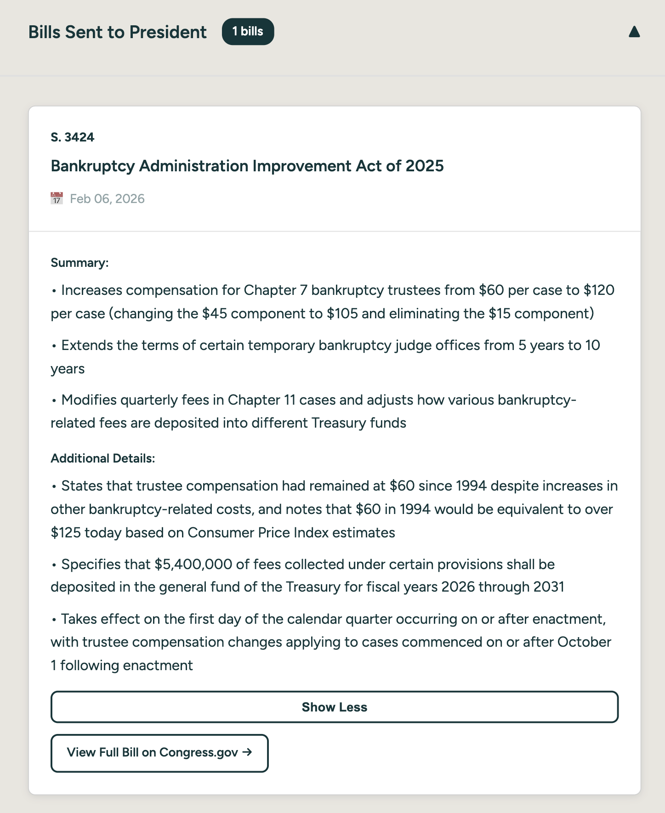
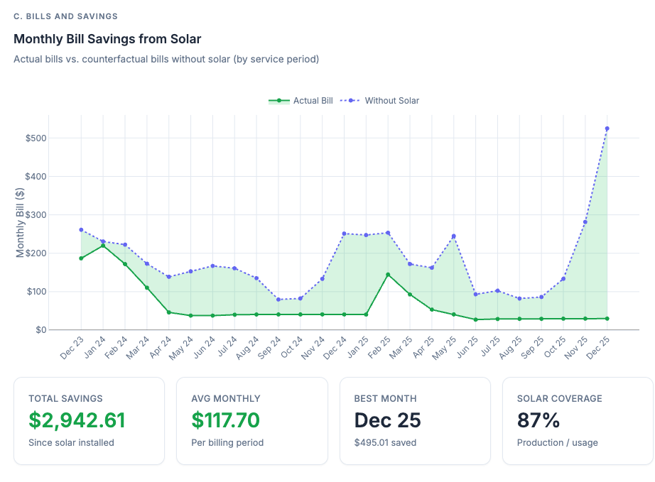
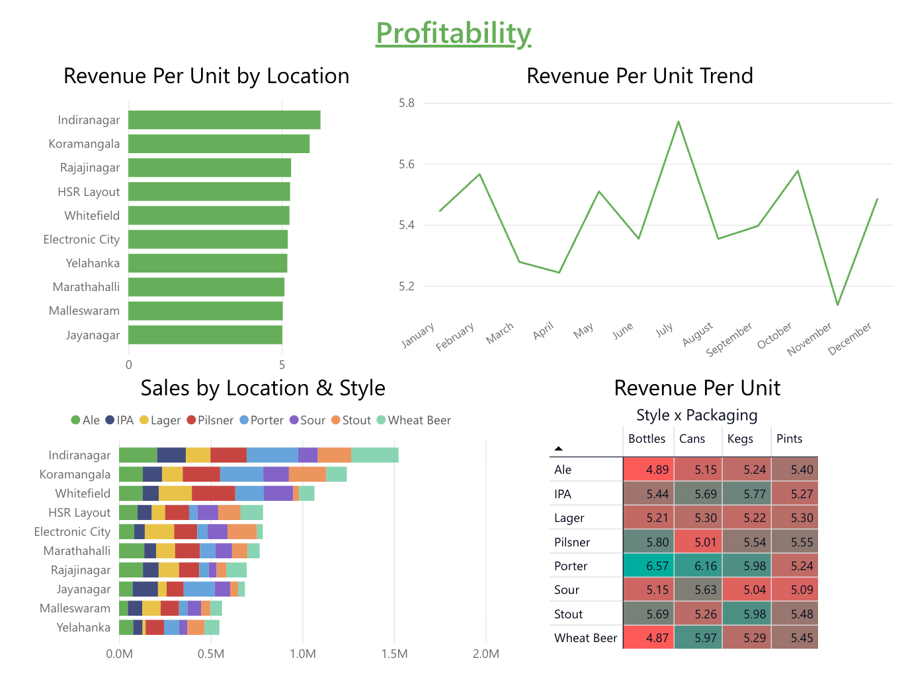

Founder & Technical Consultant
Katahdin Logic LLC
From computational chemistry research to AI-powered civic technology, I bring a scientist's rigor, a builder's practicality, and a teacher's clarity to every project. With years of academic research and teaching experience, I meet clients where they are and bring them along to where the technology can take them.
In 2025 I founded Katahdin Logic LLC to build AI-powered data systems for mission-driven organizations. If you have messy data, manual processes, or information locked in documents, I can help. I work closely with clients to own problems end-to-end and deliver systems that last.

A civic engagement tool that automates Congressional bill tracking with AI-powered summaries, making legislative activity accessible and understandable. Includes data pipelines from Congress.gov API, Claude API integration for bill summarization, analytics dashboards, and a reviewer feedback system for continuous quality improvement.

A real-time monitoring and rate optimization dashboard for residential solar. Ingests production and consumption data every 15 minutes via the SolarEdge API, tracks credit balances under Maine's net metering program, and models bill scenarios across three CMP rate plans to recommend the best option.

An interactive Power BI dashboard analyzing brewery operations across 583 batches and 8 beer styles. Built on Azure SQL Database with a normalized star schema, exploring sales performance, profitability by style and packaging, operational efficiency, and statistical patterns.
(Best viewed on desktop)
Summarization, extraction, and classification to turn documents into actionable data.
Messy spreadsheets to clean databases. Migration, integration, and automation.
Program and impact data dashboards, grant reporting automation, and analytics.
Connect nonprofit tools, build intelligent search, and automate workflows across systems.
MIT's Applied Data Science Program is where I shifted from academic scientific and statistical modeling toward business applications. These projects demonstrate that shift, applying machine learning and data analysis to prediction, classification, and clustering problems.
Classified emotions from 20K facial images using convolutional neural networks. Compared pre-trained architectures (VGG, ResNet, EfficientNet) with varying data augmentation strategies. Included data cleaning with facial detection models and image hashing for duplicate removal.
Predicted Shinkansen passenger satisfaction using ensemble methods. Systematic feature engineering and null value imputation strategies achieved 95.58% accuracy with XGBoost, within 0.24% of the winning model.
Identified distinct geographic clusters using socio-economic indicators. Compared K-means, K-medoids, Gaussian mixture models, and hierarchical clustering approaches to determine optimal groupings.
My career started with a decade of computational modeling, optimization, and rigorous statistical analysis. With a Ph.D. in Computational Chemistry from the University of Minnesota, a postdoctoral fellowship at Oak Ridge National Laboratory, and a faculty position as Assistant Professor of Chemistry at Bowdoin College, I bring a deep and thoughtful foundation to every system I design and every problem I solve.